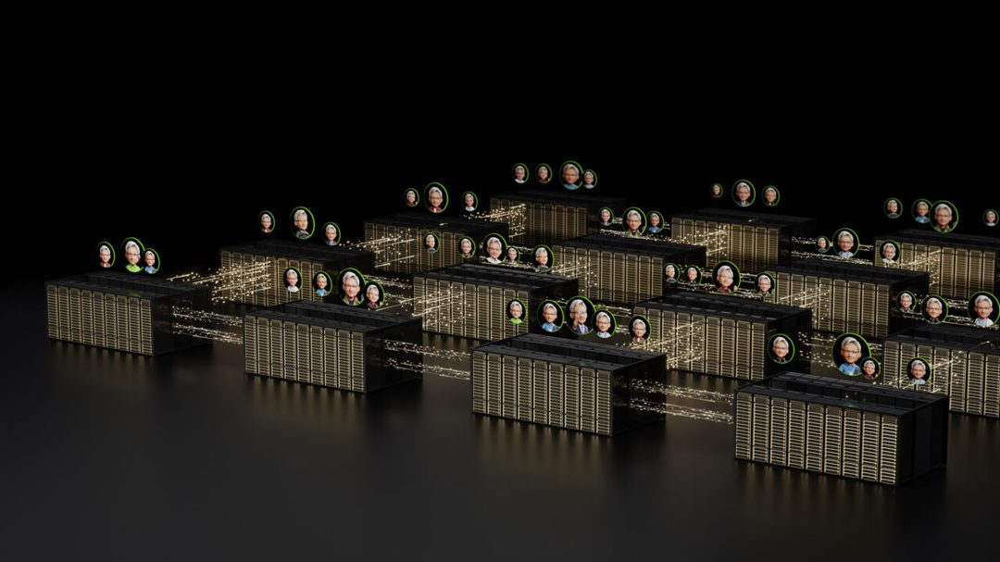
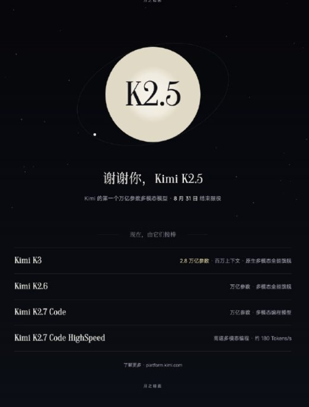

AI 雷达
8月25日 周二 · 每日 AI 精读
AI 雷达 · 8月25日｜今日精读10条
官方更新
① 连线、运行、部署：Gradio 中的 AI 工作流实战
官方更新 · Official AI Updates · 1 个来源
原文：https://huggingface.co/blog/gradio-workflow-guide
② Kiro 集成 GPT-5.6，为开发者带来更优性价比
Kiro 现已集成 GPT-5.6，旨在为开发者提供更具性价比的软件开发辅助能力。根据 Official AI Updates 发布的信息，此次更新使开发者能够在 Kiro 平台内直接调用 GPT-5.6 模型，覆盖软件规划、构建、代码审查及测试等核心开发环节。该集成重点优化了价格与性能的平衡，使开发者在利用大模型完成全流程开发任务时获得更优的成本效益比。
官方更新 · Official AI Updates · 1 个来源
原文：https://openai.com/index/gpt-5-6-in-kiro
③ NVIDIA Vera Rubin NVL72 树立 AI 智能体效率新标准：每瓦特工作量提升至 30 倍
NVIDIA 公布的片上性能实测数据显示，Vera Rubin NVL72 系统在 AI 智能体工作负载下的每兆瓦吞吐量达到 NVIDIA GB300 NVL72 的 30 倍，Token 成本降低至后者的三十五分之一。该测试基于 SemiAnalysis AgentX 工作负载，采用真实世界的智能体编程轨迹，保留了实际上下文增长、工具调用及子智能体生成过程。OpenRouter 数据显示智能体 AI 工作负载消耗的 Token 量是简单聊天请求的 15 倍，因智能体需持续推理并积累长上下文。在 DeepSeek V4 Pro 模型上，GB300 NVL72 的每兆瓦吞吐量已是 NVIDIA Hopper 架构的 15 倍，而 Vera Rubin NVL72 在此基础上进一步将性能提升 30 倍。对于受电力限制的 AI 工厂，这意味着同等能耗下可完成 30 倍的智能体工作量。目前该早期测试结果尚待 SemiAnalysis 审核，且未包含 Vera CPU 的性能数据。

图源：nvidia.com
官方更新 · AI HOT · 1 个来源
原文：https://blogs.nvidia.com/blog/vera-rubin-nvl72-efficiency-ai-agents
行业动态
① 2026CSDI：AGI前夜，属于懂Agent、更懂模型的长期深耕企业
WAIC 2026大模型与生成式AI赛道共有130家参展主体，其中83家以AI Agent或智能应用为主标签，基础大模型公司仅剩18家，行业竞争单元正从单一模型向系统演进。AIbase指出，AGI已成为研发组织的核心战略锚点，DeepSeek创始人梁文锋在闭门交流中提出六步渐进式AGI路线图，即语言模型、思维链、Agent、持续学习、自迭代至具身智能，强调各步骤不可浪费且需相互支撑。唐杰认为此次AI革命本质是抬高“智能天花板”的技术变革。当前全球AI产业处于关键十字路口，企业AI策略已从分散探索转向系统性整合，关于AGI的讨论重点也从能否实现转向哪些组织能够实现，算力、数据、算法、人才及组织结构共同决定了发展上限。
行业动态 · AIbase · 1 个来源
原文：https://www.aibase.com/news/30569
② ChatGPT上线自定义贴纸功能，支持导出iMessage和WhatsApp
OpenAI 正式上线 ChatGPT 自定义贴纸功能，支持用户基于照片、创意或趣味内容生成个性化贴纸，并直接导出至 iMessage、WhatsApp 及本地相册。该功能支持透明背景贴纸及完整贴纸包制作，用户可上传单张或多张图片进行转换、素材重组与元素增删，也可参考其他图片迁移视觉风格或通过文本提示词生成设计。据 AIbase 实测，用户上传一张图片并输入“Create iMessage Sticker”等指令即可获得透明背景素材，ChatGPT 在抠图同时还能智能修复原图中被裁切的人物部分。导出时点击“Add to Messaging App”按钮即可，其中 WhatsApp 受 Meta 平台限制需至少一次导出三张贴纸。导出至 iMessage 后，贴纸将出现在“信息”应用贴纸功能的 ChatGPT 专属区域。
图源：aibase.com
行业动态 · AIbase · 1 个来源
原文：https://www.aibase.com/news/30583
③ Claude Code 官方日志曝出“暗中降智”实锤，AI 行业跑分脱节与版本黑箱再遭质疑
开发者 argofowl 在查阅 Claude Code 官方日志时发现，自 2.1.237 版本起，系统将用户选择的“high”推理级别静默映射为原本对应“low”设置的数值 10，且官方更新日志未提及此项变更。针对社区质疑，Claude Code 工程师回应称这实为 API 服务的配置测试，该数值本身无实际意义，不会对整体性能产生实质影响，但这一解释未能完全消除用户顾虑。随后科技博主 Chubby 指出 Opus5 性能出现明显下滑，相关工程师承认模型当前存在不稳定性，团队已优先处理该问题。AIbase 认为，此次事件暴露了当前 AI 行业跑分成绩与用户实际体验严重脱节的痛点，同时也凸显了模型版本更新不透明带来的风险，强调随着人工智能逐渐成为数字基础设施，模型的持续稳定性与透明度是维系用户信任的关键基石。
行业动态 · AIbase · 1 个来源
原文：https://www.aibase.com/news/30588
④ Grok Build迎来最强外挂！集成Browser-Use插件，AI正式接管你的浏览器
SpaceX AI 宣布为 Grok Build 平台集成 Browser-Use 插件，使 AI 能够直接调用真实浏览器执行复杂网页交互。该插件提供两种运行模式：用户可直接调用本地已保存登录状态的 Chrome 浏览器且无需额外 API key，也可选择隔离的 Browser-Use 云浏览器环境。集成后 Grok Build 具备独立浏览网站、提取网页数据、填写在线表单、自动化测试 Web 应用及截图等能力。开发者还可通过 uvx 在本地运行该工具，构建完整的 Web 自动化工作流。AIbase 指出，此次升级是 Grok 迈向全栈 Web 智能助手的关键一步。
行业动态 · AIbase · 1 个来源
原文：https://www.aibase.com/news/30586
⑤ Kimi K2.5 月底退役：月之暗面第一代万亿参数多模态模型谢幕
Moonshot 通过 Kimi 官方微博宣布，其第一代万亿参数多模态模型 Kimi K2.5 将于本月底正式退役。该模型今年 1 月发布并开源，采用原生多模态架构，支持视觉与文本输入、思考与非思考模式以及对话和 Agent 任务，曾在 Agents、代码、图像视频及通用智能等开源评测中取得领先表现。随着 K2.5 谢幕，Moonshot 已将重心转向 7 月开源的 Kimi K3。K3 参数规模达 2.8 万亿，采用 KDA 混合线性注意力机制与注意力残差技术，原生支持视觉理解，上下文窗口最高 100 万 tokens。据 AIbase 信息，官方称 K3 是首个达到 2.8 万亿参数的开源模型，且在过去 12 个月中，Kimi 有 9 个月保持着最大开源模型规模的纪录。

图源：aibase.com
行业动态 · AIbase · 1 个来源
原文：https://www.aibase.com/news/30563
⑥ Lady Gaga男友低调布局：用“活体皮肤”训练AI，这家生物初创公司如何颠覆美妆研发？
生物初创公司 Outer Biosciences 将体外人体活体皮肤的存活时间延长至一个月，远超行业通常仅能维持数天的标准，并将这些组织数据接入闭环自增强 AI 模型以加速美妆与医疗研发。该公司由 Lady Gaga 的伴侣 Michael Polansky 联合创立，据 AIbase 介绍，其团队从 National Disease Research Interchange 等合规生物样本库获取整形手术废弃皮肤，在伦理审查下实现长期体外培养，使胶原蛋白重塑、色素沉着等需数周显现的慢速生物过程得以观测。AI 模型预测未测试化学成分对特定皮肤功能的效果后，直接在活体系统中验证，无论结果准确与否均即时反馈优化下一轮迭代。Outer Biosciences 不推出自有消费品牌，而是将验证安全的高效成分通过授权或销售提供给主流美妆及制药企业，目前已培育出多个高商业潜力候选成分，并与药企合作研究特定抗癌药物引发的严重皮疹成因。为保护数据隐私，其大部分 AI 运算目前在本地服务器运行。
行业动态 · AIbase · 1 个来源
原文：https://www.aibase.com/news/30592
⑦ OpenAI 研究员 Luke Metz 转投 Meta 超级智能实验室，AI 人才争夺再升级
知名 AI 研究员 Luke Metz 已离开 OpenAI，于本周加入 Meta Superintelligence Labs，向负责 AI 运营的 Alexandr Wang 汇报。据 Axios 援引知情人士消息，这是 Metz 职业生涯的又一次变动，他曾在 2024 年离开 OpenAI 加入 Mira Murati 创办的 Thinking Machines，今年早些时候回归 OpenAI 后如今再次跳槽。自 Meta 与 Scale AI 达成 10 亿美元交易并招募前 CEO Alexandr Wang 以来，该公司一直在积极吸纳人才，Luke Metz 的加入是其最新重要人事动作。AIbase 指出，这种顶尖研究人员在竞争实验室间频繁流动的现象，反映出随着大模型竞争进入超级智能冲刺阶段，AI 人才争夺正在加剧，顶尖研究人员的归属已成为衡量各公司实力的关键变量。
图源：aibase.com
行业动态 · AIbase · 1 个来源
原文：https://www.aibase.com/news/30565
以上内容由 AI 雷达 自动整理自过去 24 小时的公开信源，图片来自原文页面，原文出处链接见每条信息下方。
以下为发布辅助信息（复制用，粘贴时请勿包含本区块）
标题：AI 雷达 · 8月25日｜今日精读10条
摘要：AI 雷达8月25日 周二精读 10 条 AI 要闻：连线、运行、部署：Gradio 中的 AI 工作流实战。更多条目见「阅读原文」。
阅读原文：https://hutaojiazi010304.github.io/ai-news-radar/